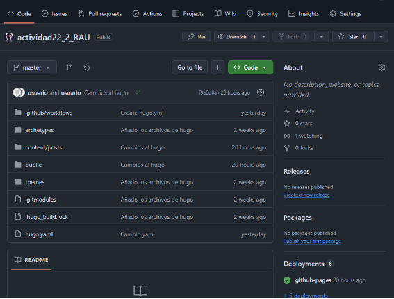

Tarea 2: Creación del repositorio de Hugo Papermod
por Alvaro San Juan - ASIR2
En esta actividad vamos a crear una nueva página web que use Hugo como base para funcionar y que use el estilo de Papermod
Preparación de Hugo
Para poder hacer el repositorio usando hugo tendremos que instalar hugo, para ello tenemos que ir al GitHub de Hugo, entrar en versiones y luego ir a la página 2 para encontrar la v0.135
Elegimos el archivo de Linux AMD64.deb y copiamos su enlace, con el enlace copiado vamos a ir a VS code conectado en remoto de Debian dentro del fichero "repositorios". Usaremos en el terminal wget (Link) para instalar el archivo.
Ahora que tenemos el archivo vamos a ir al root (solo necesario para instalar) y hacemos apt install del archivo hugo v0.135.
Creación del repositorio Papermod
Ahora que tenemos todo instalado revisaremos el GitHub en la Wiki, en la sección de instalación. En esta sección tendremos una guía de como instalar el Papermod.
Primero crearemos el nuevo sitio Hugo con hugo new site (Nombre), es opcional pero no recomendado usar --format yaml para el sitio. Papermod lo recomienda por lo que vamos a usarlo.
Entraremos en el nuevo fichero con cd y luego usaremos git submodule add como se pide en el metodo 2 recomendado por Papermod. Al hacer esto nos dirá que el directorio no es un repositorio.
Usaremos git init para transformar el directorio en un repositorio.
Ahora sí usaremos submodule add y despues los git submodules update / git submodule init.

Dentro del repositorio crearemos una carpeta llamada posts dentro de content, dentro de content/posts crearemos carpetas para los posts, y dentro de estas carpetas pondremos los nuevos posts.
Estructura: content/posts/postname/post.md
Es importante indicar que se debe usar la estructura de yaml que se indica en la página web de Papermod, dentro del hugo.yaml.
Ahora que está configurado todo tendremos que usar el comando de hugo server --bind (IP) para que hugo nos creé la página web con su propio servidor localhost.
Este es el aspecto:
Papermod en GitHub
Como ya está creado la página web tendremos que subirlo a GitHub, para subirlo tendremos que crear un repositorio en GitHub con el mismo nombre del repositorio en VS code. En el terminal pondremos git add y git commit, también git remote origin (Link del repositorio) y git push.
Este es el resultado final en GitHub (ignora el workflow)

Ahora toca crear la página web en GitHub, para ello tenemos que poner como source el GitHub Actions.
Buscaremos en GitHub todos los posibles workflows disponibles, entre estos tenemos que buscar Hugo.
Al presionar configure nos mostrará un modelo de Workflows especializado en Hugo, lo crearemos y se añadirá directamente al repositorio. (ES IMPORTANTE HACER UN GIT PULL DESPUES DE CREAR EL WORKFLOW O ESTARÁN DESINCRONIZARÁ)
Como podemos ver funciona la página web.
Despliegue en CloudFlare
Crearemos una página en Work & Pages (ES IMPORTANTE AÑADIR EL REPOSITORIO EN CLOUDFLARE), seleccionando el repositorio y poniendo la configuración necesaria.
Ponemos como modulo el de Hugo, quitamos la instalación de Hugo y pondremos que /public sea la carpeta raiz. Ademas vamos a crear una variable que sea HUGO_VERSION 0.135.
La página ya ha sido creada y funciona.